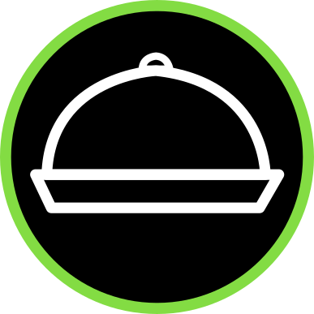
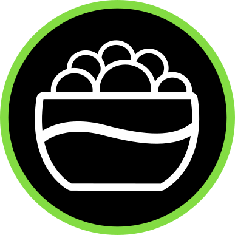

Main Dishes

Snacks
Drinks
Souvenirs
Main Dishes
Snacks
Drinks
Souvenirs
Monthly Recommendation
There is nothing more special than sharing a Hen Omby Ritra with your Friends,
Family or simply having a night of deliciousness with your loved one.
One of the dishes that became one of the most popular in Madagascar, we now recommend
it just this month, where we enjoyed quite tropical and rainy weather. There is nothing
more delicious than its delicious and fresh ingredients to have an unforgettable dinner
and why not have a Three Horses Beer, while the nocturnal flavor of this dish floods your palate.
Our Receip Profile
Beef simmered in a Malagasy way, accompanied by rice, based on zebu, cooked in water with salt.
Receip Price
$11.99

Make a Carreer by working with the Best Ones!
We as a Team always work under a clear and concise term "Professionalism". Within the framework of this term,
all of us as employees, part of a work team, work with a great spirit of camaraderie and responsibility. Administrators,
Chefs, Waiters, Bartenders, Kitchen Assistants as well as cleaners, we remain united with a single objective: To provide
a successful and memorable customer service.
What are we looking for?
We are looking for personnel who not only have the skills within the field, but also have the necessary social and soft
skills to be able to work rigorously and successfully with the work team. We are looking for people who wish to contribute
not only their knowledge within the field but also contribute to the cause and objective of our work team, which is: Give
the best of yourself for a better personal future! Since what motivates each of us are our dreams and goals!
Positions available!
We are currently looking for employees for some of our restaurants through out Switzerland!
-Kitchen Assistants (Zurich, Basel)
-Coockers (Zurich)
-Bartender (Basel)
-Waiters (Zurich)
CLICK HERE! In order to Apply for any of these positions